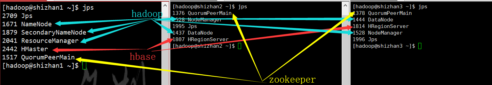
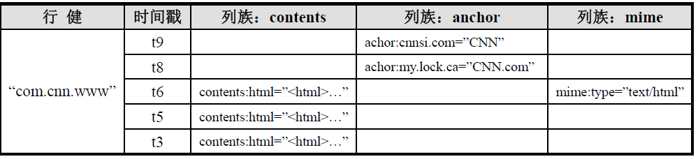
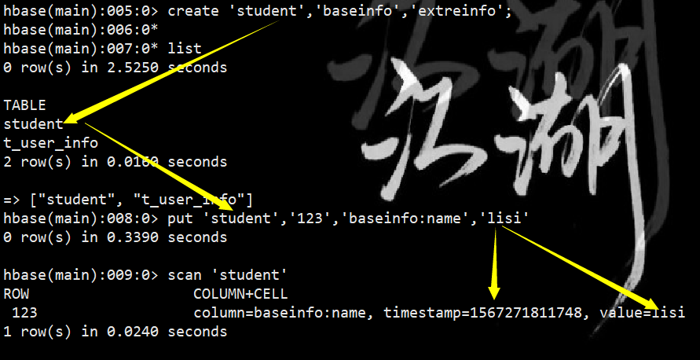
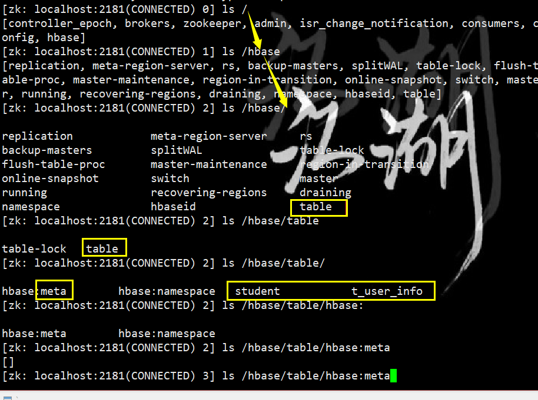
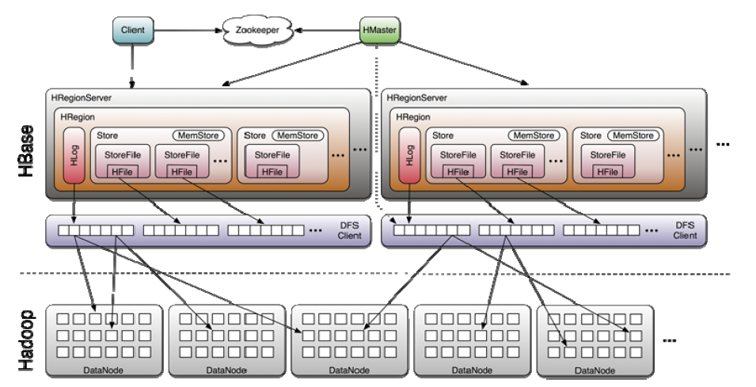

1 hbase简介
1.1 hbase是什么
HBASE是一个高可靠性、高性能、面向列、可伸缩的分布式存储系统，利用HBASE技术可在廉价PC Server上搭建起大规模结构化存储集群。
HBASE的目标是存储并处理大型的数据，更具体来说是仅需使用普通的硬件配置，就能够处理由成千上万的行和列所组成的大型数据。
HBASE是Google Bigtable的开源实现，但是也有很多不同之处。比如：Google Bigtable利用GFS作为其文件存储系统，HBASE利用Hadoop HDFS作为其文件存储系统；Google运行MAPREDUCE来处理Bigtable中的海量数据，HBASE同样利用Hadoop MapReduce来处理HBASE中的海量数据；Google Bigtable利用Chubby作为协同服务，HBASE利用Zookeeper作为对应。
HBase集群有两种角色：Hmaster 和 HregionServer
Hdfs适合存整块数据，如果大量数据一条一条存，namenode难以承受，所以有了Hbase。一条数据来时，先缓存到HregionServer内存，128M满了后写到hdfs上。
hmaster的作用：
- 管理HregionServer，如果hregionserver挂了，hmaster管理数据迁移。
- 连接zk的API，做增删改查 表的节点，创建zk节点，管理映射信息
- 管理HregionServer中的表分配，也就管理元数据，保存表的位置，表的具体数据，在hregionServer上。表创建后，就跟hmaster没关系了，可以直接通过zk增删改查，hmaster只是在zk注册了节点。
hregionserver作用
- 表的增删改查数据。
- 和hdfs交互，存取数据。
1.2 hbase优势
hbase是一种分布式数据库，相比于传统数据库的优势在于：
- 线性扩展，随着数据量增多可以通过节点扩展进行支撑
- 数据存储在hdfs上，备份机制健全
- 通过zookeeper协调查找数据，访问速度块。
但是hbase主要用来存海量数据，列式数据库无法做多表关联。
2 hbase安装
主要包括以下步骤
- 下载hbase安装包
- 解压，重命名
- 修改环境变量，vi /ect/profile 然后source一下激活修改
- 修改配置文件
- 分发到其他节点机
- 启动，先启动hadoop和zookeeper集群,然后start-hbase.sh
- 进行命令行hbase shell
启动后Jps查看：

3 hbase数据模型
3.1 hbase数据模型

3.2 rowkey
row key是用来检索记录的主键。访问HBASE table中的行，只有三种方式：
- 通过单个row key访问
- 通过row key的range（正则）
- 全表扫描
在HBASE内部，row key保存为字节数组。存储时，数据按照Row key的字典序(byte order)排序存储。设计key时，要充分排序存储这个特性，将经常一起读取的行存储放到一起。(位置相关性)
3.3 Columns Family
列簇 ：HBASE表中的每个列，都归属于某个列族。列族是表的schema的一部分(而列不是,列不是表结构，而是作为数据)，必须在使用表之前定义。列名都以列族作为前缀。例如 courses:history，courses:math都属于courses 这个列族。
3.4 cell
由{row key, columnFamily, version} 唯一确定的单元格（row key确定是哪个id的数据，再由列簇确定列，再由时间版本确定唯一单元格）。cell中 的数据是没有类型的，全部是字节码形式存贮。
3.5 Time Stamp
HBASE 中通过rowkey和columns确定的为一个存贮单元称为cell。每个 cell都保存 着同一份数据的多个版本。版本通过时间戳来索引。时间戳的类型是 64位整型。时间戳可以由HBASE(在数据写入时自动 )赋值，此时时间戳是精确到毫秒 的当前系统时间。时间戳也可以由客户显式赋值。如果应用程序要避免数据版 本冲突，就必须自己生成具有唯一性的时间戳。每个 cell中，不同版本的数据按照时间倒序排序，即最新的数据排在最前面。
为了避免数据存在过多版本造成的的管理 (包括存贮和索引)负担，HBASE提供 了两种数据版本回收方式。一是保存数据的最后n个版本，二是保存最近一段 时间内的版本（比如最近七天）。用户可以针对每个列族进行设置。
3.5 更新
hbase没有update的概念，若想修改数据，就用下一条数据，覆盖上一条，rowkey相同。
4 hbase命令
| 功能 | 命令 |
|---|---|
| 进入 | hbase shell |
| 退出 | quit |
| 创建表 | create ‘表名’, ‘列族名1’,’列族名2’,’列族名N’ |
| 查看所有表 | list |
| 描述表 | describe ‘表名’ |
| 判断表存在 | exists ‘表名’ |
| 判断是否禁用启用表 | is_enabled ‘表名’ |
| 添加记录 | put ‘表名’, ‘rowKey’, ‘列族 : 列’ , ‘值’ |
| 查看记录rowkey下的所有数据 | get ‘表名’ , ‘rowKey’ |
| 查看表中的记录总数 | count ‘表名’ |
| 获取某个列族 | get ‘表名’,’rowkey’,’列族’ |
| 获取某个列族的某个列 | get ‘表名’,’rowkey’,’列族：列’ |
| 删除记录 | delete ‘表名’ ,’行名’ , ‘列族：列’ |
| 删除整行 | deleteall ‘表名’,’rowkey’ |
| 删除一张表 | 先要屏蔽该表，才能对该表进行删除 第一步 disable ‘表名’ ，第二步 drop ‘表名’ |
| 清空表 | truncate ‘表名’ |
| 查看所有记录 | scan ‘表名’ |
| 查看某个表某个列中所有数据 | scan ‘表名’ , {COLUMNS=>’列族名:列名’} |
| 更新记录 | 就是重写一遍，进行覆盖，hbase没有修改，都是追加 |

5 hbase依赖zookeeper

通过zk知道rowkey那条记录该放哪个regionserver上，找数据通过zk，不通过hmaster。
- hbase regionserver向zookeeper注册，提供hbase regionserver状态信息（是否在线）。
- hmaster启动时候会将hbase系统表-ROOT-加载到zookeeper cluster，通过zookeeper cluster可以获取当前系统表.META.的存储所对应的regionserver信息
- 保存Hmaster的地址和backup-master地址
- 保存表-ROOT-的地址，（hbase默认的根表，检索表）
- HRegionServer列表
6 java API
注意： 在eclipse中操作响应太慢，集群为虚拟机集群，改了本机的host文件后，响应正常。
6.1基础api
| 功能 | API | 作用 | 用法 |
|---|---|---|---|
| 配置 | HBaseConfiguration | 通过此类可以对HBase进行配置 | Configuration config = HBaseConfiguration.create(); |
| 表管理类 | HBaseAdmin | 提供接口关系HBase 数据库中的表信息 | HBaseAdmin admin = new HBaseAdmin(config); |
| 表描述类 | HTableDescriptor | 类包含了表的名字以及表的列族信息 | HTableDescriptor htd =new HTableDescriptor(tablename); htd.addFamily(new HColumnDescriptor(“myFamily”)); |
| 列簇描述类 | HColumnDescriptor | 维护列族的信息 ｜ htd.addFamily(new HColumnDescriptor(“myFamily”)); |
6.2 增删改查
| 功能 | API | 用法 |
|---|---|---|
| 创建表 | CreateTable | HBaseAdmin admin = new HBaseAdmin(config); HTableDescriptor desc = new HTableDescriptor(tableName); HColumnDescriptor family1 = new HColumnDescriptor(“f1”); HColumnDescriptor family2 = new HColumnDescriptor(“f2”); desc.addFamily(family1); desc.addFamily(family2); admin.createTable(desc); |
| 删除表 | disableTable deleteTable |
HBaseAdmin admin = new HBaseAdmin(config); admin.disableTable(tableName); admin.deleteTable(tableName); |
| 创建表类 | HTable | // 普通获取表 HTable table = new HTable(config,Bytes.toBytes(tablename); // 通过连接池获取表 Connection connection = ConnectionFactory.createConnection(config); HTableInterface table = connection.getTable(TableName.valueOf(“user”)); |
| 单条插入 | put | Put put = new Put(row); p.add(family,qualifier,value); |
| 批量插入 | - | List Put put = new Put(Bytes.toBytes(rowKey));//获取put，用于插入 put.add(Bytes.toBytes(family), Bytes.toBytes(qualifier),Bytes.toBytes(value));//封装信息 list.add(put); table.put(list);//添加记录 |
| 删除数据 | Delete | Delete del= new Delete(Bytes.toBytes(rowKey)); table.delete(del); |
| 单条查询 | Get | HTable table = new HTable(config,Bytes.toBytes(tablename)); Get get = new Get(Bytes.toBytes(row)); Result result = table.get(get); |
| 批量查询 | ResultScanner | ResultScanner scanner = table.getScanner(scan); For(Result rowResult : scanner) { Bytes[] str = rowResult.getValue(family,column);} |
6.3 过滤器
FilterList 代表一个过滤器列表，可以添加多个过滤器进行查询，多个过滤器之间的关系有：
与关系（符合所有）：FilterList.Operator.MUST_PASS_ALL
或关系（符合任一）：FilterList.Operator.MUST_PASS_ONE
过滤器种类有：
- 列植过滤器—SingleColumnValueFilter：过滤列植的相等、不等、范围等
- 列名前缀过滤器—ColumnPrefixFilter：过滤指定前缀的列名
- 多个列名前缀过滤器—MultipleColumnPrefixFilter：过滤多个指定前缀的列名
- rowKey过滤器—RowFilter:通过正则，过滤rowKey值。
7 hbase 原理

7.1 写
- client向hregionserver发送写请求。
- hregionserver将数据写到hlog（write ahead log）。为了数据的持久化和恢复。
- hregionserver将数据写到内存（memstore）
- 反馈client写成功。
7.2 数据flush
- 当memstore数据达到阈值（默认是64M），将数据刷到硬盘，将内存中的数据删除，同时删除Hlog中的历史数据。
- 并将数据存储到hdfs中。
- 在hlog中做标记点。
7.3 数据合并
- 当数据块达到4块，hmaster将数据块加载到本地，进行合并
- 当合并的数据超过256M，进行拆分，将拆分后的region分配给不同的hregionserver管理
- 当hregionser宕机后，将hregionserver上的hlog拆分，然后分配给不同的hregionserver加载，修改.META.
- 注意：hlog会同步到hdfs，以保证该机器坏了，hlog有备份，但是hlog不是实时同步的，若一周同步一次，则宕机这一周的数据无法恢复。
7.4 读
- 通过zookeeper和-ROOT- .META.表定位hregionserver（与xookeeper来回交互）
- 数据从内存和硬盘合并后返回给client
- 数据块会缓存（常用数据会缓存到内存中）
7.5 hmaster职责
- 管理用户对Table的增、删、改、查操作；
- 记录region在哪台Hregion server上
- 在Region Split后，负责新Region的分配；
- 新机器加入时，管理HRegion Server的负载均衡，调整Region分布
- 在HRegion Server宕机后，负责失效HRegion Server 上的Regions迁移。
7.6 hregionserver职责
- HRegion Server主要负责响应用户I/O请求，向HDFS文件系统中读写数据，是HBASE中最核心的模块。
- HRegion Server管理了很多table的分区，也就是region。
7.7 client职责
HBASE Client使用HBASE的RPC机制与HMaster和RegionServer进行通信
- 管理类操作：Client与HMaster进行RPC；
- 数据读写类操作：Client与HRegionServer进行RPC。
8 代码实例
1 | package zph.com.hbase; |